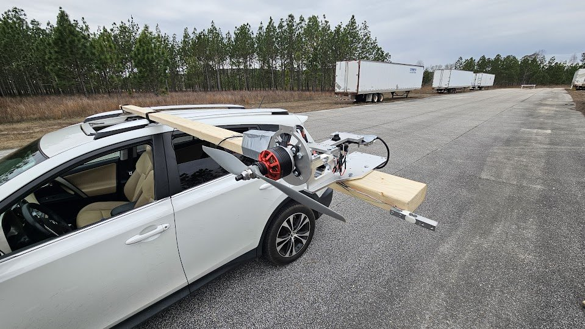
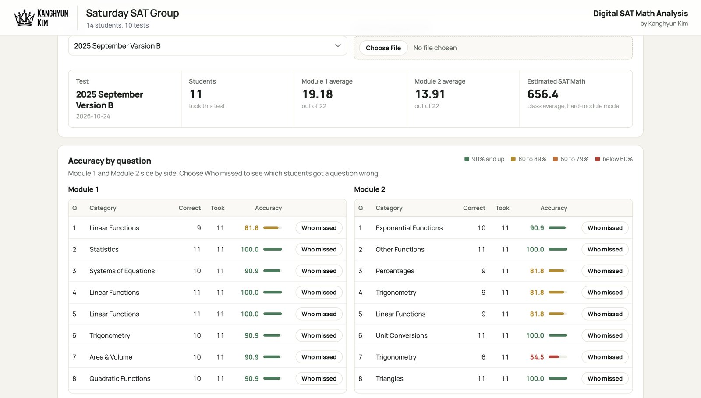

Projects

ESP32EmbeddedIn progress
Open Wake Switch
Discovery Project. An ESP32 and servo that flips a light switch at a set time.
ArduinoWiringIn progress
RoboJackets Mini Rover
Drew the electrical diagram and soldered the wiring for our team's Bluetooth-controlled rover in the RoboJackets Mini Rover Challenge.

TestingPropulsionExcel
Propulsion testing, Auburn DBF
Compared 12 motor, propeller, and battery setups on a thrust stand and in 60 mph airflow, then built an Excel tool to choose a propeller.

HardwareIndustrial
AMR charging safety system
At TPOINT, built the frame and wired the control panel for a system that cuts charging power when temperature is too high.

WebLive demoAI-assisted
Digital SAT Math Performance Analyzer
Turns a Google Forms exam export into charts and a PDF report for each student. It cut about three hours of manual work for a class of 15 to about five minutes.